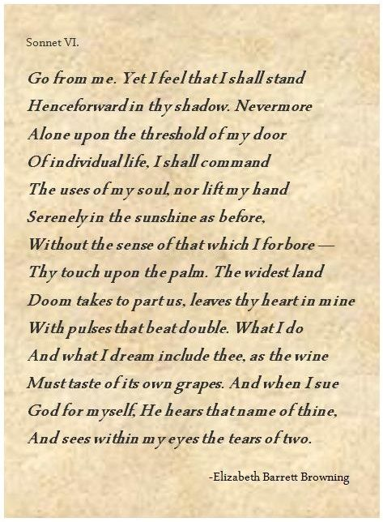

Biology was probably the least difficult Science subject for this quarter, due to it mostly being memorization and slightly familiar concepts from elementary grades. However, it had the most number of Alternative Assessments making it pretty tedious.
The subject for this school year was about how life evolved to different species and groups; the inner workings of plants from the transportation of nutrients inside them to delving more into the cycle of photosynthesis; and the processes that happen inside animals and humans from their reactions to stimuli to how they excrete waste inside their body.
Getting a throwback into the first quarter, what body parts in the list below are not homologous structures?
English, in my opinion, was a pretty hard but considerate subject. It taught us the different periods in time of American literature starting from the Scandinavian Literature, then delving into the Romantic period, then delving into Colonial and Gothic Era, ending in the Imagist Movement. It also taught us different types of figurative language and new words, through reading materials and synchronous discussions.
(It also taught me that multiple choice English questions are super subjective and is not worth crying for... which is why I chose this question to be multiple choice >:) )
The poem below is Elizabeth Browning's Sonnet 76. I used it as the representative of English for personal reasons.
What tone do you think best fits the poem?
Uh, let me just get my translator. It's gonna be really quick~. Sana ay naiintindihan mo ako, mag-aaral, kasi sa tanong na ito ay makikipag-usap ako sa iyo gamit ang wikang Filipino.
Ang Filipino subject ay nagpokus sa iba't ibang uri ng panitikan kagaya ng tula at talumpati, at sa libro ni Rizal na pinangalangang "El Filibusterismo" o "Ang Filibusterismo" bilang kasunod ng librong itinalakay natin sa nakalipas na baitang. Hindi masyadong mahirap ang Filipino kaso nga lang ay maraming video projects na by group kaya't kailangan mo talagang maglagay ng effort at maging mapaghintay rito.
Ano ang tawag ni Don Custodio sa sarili niya sa liham na ipinasa niya kay Pepay upang maibigay sa mga mag-aaral? (Kabanata 22: Ang Palabas)
If you thought that going back at the 1890s to read El Filibusterismo was exhausting, then you might pass out in this trip, so buckle up, because were going in a trip in our favorite rocket shi-
Social science, or history for our grade, tackled World History in the 2nd Millennium, beginning on the era of Renaissance, going over to the 18th century for the Great Acceleration and Industrial Revolution, skimming towards the two World Wars, zooming past the concepts of the Cold War and the three Worlds, and finally ending on the high note of the challenge of world peace.
During the year of 1894, France allied with Russia when the alliance between Germany and the latter ceased to exist. What was this "friendly understanding" called?
Statistics this school year was all about learning how to interpret data from graphs, to make readable using different types of graphs, understand a normal distribution, and conduct hypothesis tests. We also learned probabilities, how to avoid biases in surveys, and how to use software to interpret data from our fourth quarter Statistics project, which was probably the hardest project in our Pisay lives so far.
Mark rolls a die, and in response, Von rolls his die as well. Assuming that both dice are six-sided and there are no other variables affecting what sides are facing up, what is the probability that the side that's facing up in Von's and Mark's die are the same? (Answer in fraction form, e.g. 1/100)